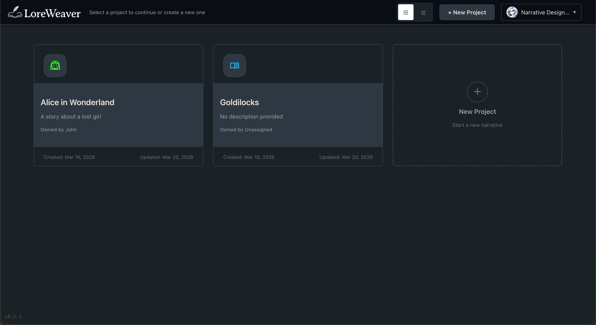
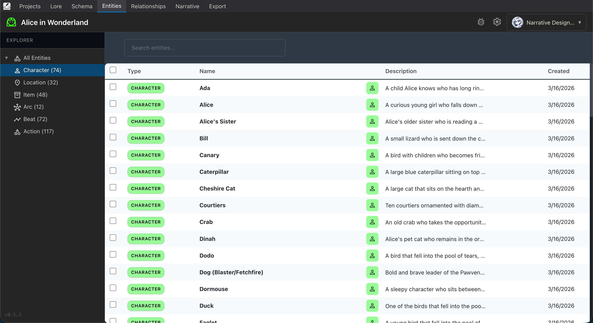
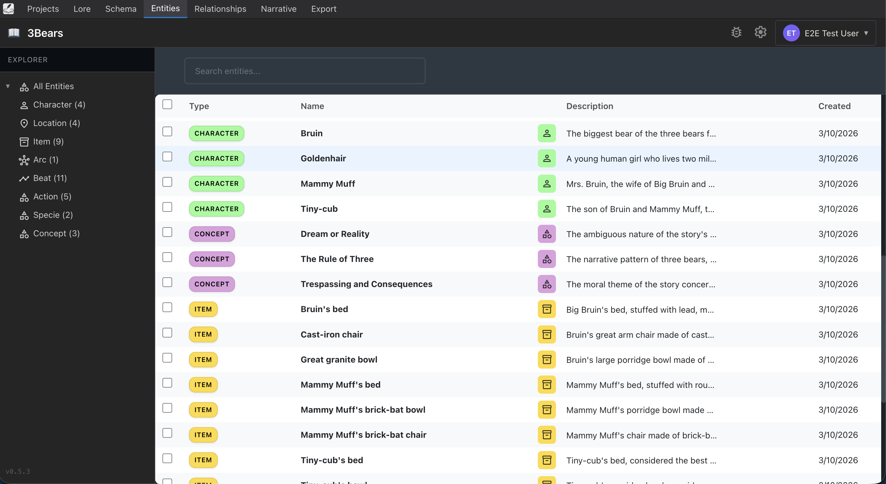
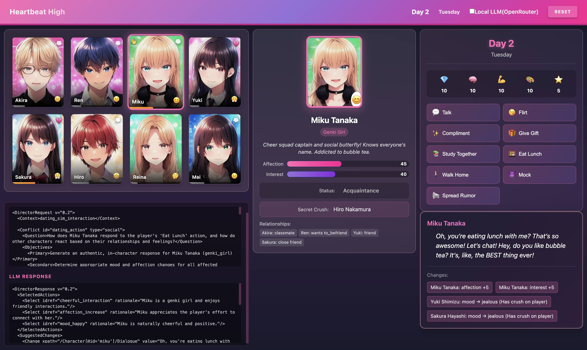
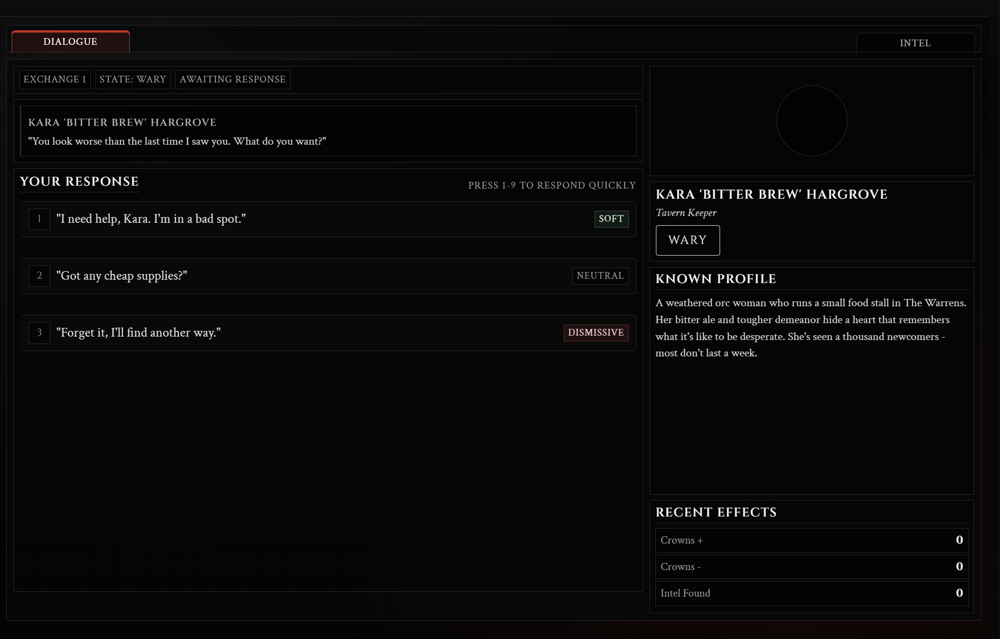

Screenshots
Product screenshots cleared for editorial use
All screenshots on this page are cleared for editorial use. Please credit "LoreWeaver / GrimmWyrd Studios" when publishing. Click any image to open the full resolution version.
Architect: Narrative Authoring Tool

Project Dashboard
The main dashboard where writers manage their narrative projects. Each project contains uploaded lore documents, extracted entities, and export configurations.

Lore Upload
Writers import their source material. Architect supports 11 document formats including PDF, DOCX, and plain text. The system processes uploaded content and prepares it for entity extraction.

Schema Definition
Writers configure which entity types to extract (characters, locations, items, story arcs, and more) and define custom attributes for each type. The schema adapts to each project's specific needs.

Entity Extraction
The AI analyzes uploaded lore and identifies narrative entities. Writers review every extraction and can accept, reject, or modify results. The system processes a full document in 5 to 7 minutes.

Entity Management
A structured view of all extracted entities. Writers can browse, search, edit, and organize characters, locations, items, and other narrative elements across their project.

Relationship Graph
An interactive visualization of how entities connect to each other. Writers can see character relationships, location connections, and story arc dependencies at a glance and edit them directly.

Narrative Board
A board view for organizing story beats, quest structures, and narrative flow. Writers arrange and connect narrative elements visually to build branching storylines.

Export
Structured narrative data exports as XML, JSON, or CSV in organized ZIP archives. The output integrates directly into game engines and development pipelines.
Director: Runtime Narrative Engine

Tavern Simulation
Director generates contextual NPC dialogue and behavior in a tavern setting. Each NPC responds dynamically based on the game's lore, the player's actions, and the current state of the world.

Social Simulation
A broader social simulation demonstrating Director's ability to manage multiple NPCs with distinct personalities, relationships, and agendas that evolve based on player choices.

Survival RPG Integration
Director running inside a survival RPG scenario. The engine tracks game state (inventory, faction standing, world events) and generates NPC responses that reflect the player's current situation.

Dialogue System
The dialogue interface showing Director's output. Every response passes through a conflict resolution schema that validates state changes before they reach the game, preventing the AI from breaking game logic.